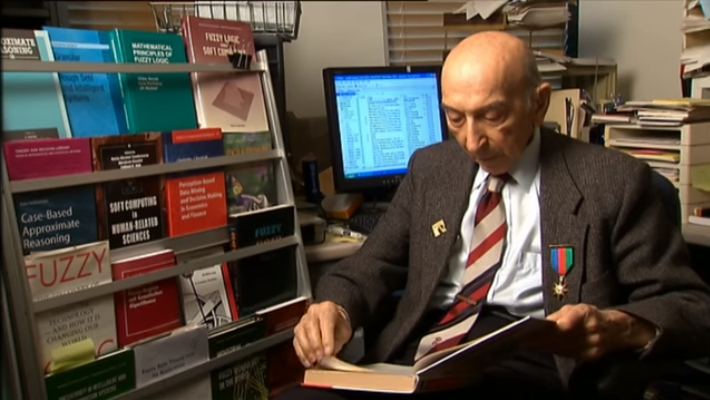
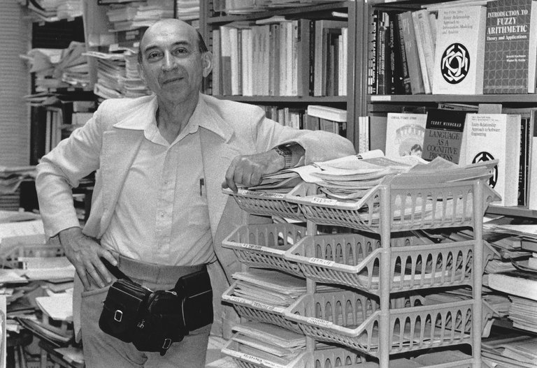

Welcome
International Conference on Theory and Application of Soft Computing, Computing with Words and Perception – ICSCCW, is organized every two years and dedicated to memory of Professor L. A. Zadeh with the aim of bringing scientists, engineers and practitioners together to exchange up-to-date knowledge and share experience in the applications of Soft Computing, Computing With Words and Perception.
Sessions of ICSCCW 2019 will focus on the applications of Computing methods such as fuzzy logic, neural computing, evoltionary computing, machine learning, probabilistic reasoning and chaos theory in engineering, economy, business, finance, education; applications to other relevant areas are also welcome.
Biographical Note:
Professor Lotfi A. Zadeh
LOTFI A. ZADEH was Professor Emeritus in the Computer Science Division, Department of EECS, University of California, Berkeley. Besides, he was serving as the Director of BISC (Berkeley Initiative in Soft Computing). Lotfi Zadeh was a Fellow of the IEEE, AAAS, ACM, AAAI, and IFSA. He was a member of the National Academy of Engineering and a Foreign Member of the Finnish Academy of Sciences, Polish Academy of Sciences, Korean Academy of Science & Technology, Bulgarian Academy of Sciences, International Academy of Systems Studies and the Azerbaijan National Academy of Sciences. He was a recipient of the IEEE Education Medal, the IEEE Richard W. Hamming Medal, IEEE Medal of Honor, ASME Rufus Oldenburger Medal, B. Bolzano Medal of the Czech Academy of Sciences, Kampe de Feriet Medal, AACC Richard E. Bellman Control Heritage Award, and many more awards, prizes and medals along with twenty-five honorary doctorates. In 2011, Lotfi Zadeh was inducted into the AI Hall of Fame. In 2012, he received the PAAIA Lifetime Achievement Award. In 2013, Lotfi Zadeh received the BBVA Foundation Frontiers of Knowledge Award for the invention and development of fuzzy logic. Born in Azerbaijan, Lotfi Zadeh was an alumnus of the University of Tehran, MIT and Columbia University. From 1950 to 1959, Lotfi Zadeh was a member of the Department of Electrical Engineering, Columbia University. He joined the Department of Electrical Engineering at UC Berkeley in 1959 and served as its Chair from 1963 to 1968.
Lotfi Zadeh carried out visiting appointments at the Institute for Advanced Study, Princeton, NJ, MIT, Cambridge, IBM Research Laboratory, San Jose, CA; AI Center, SRI International, Menlo Park, CA; and the Center for the Study of Language and Information, Stanford University. As the inventor and the father of fuzzy logic, His first paper, Fuzzy Sets which was published in 1965, was the highest cited (64536) paper in Computer Science (Web of Science) and the seventh highest cited paper in Science (Web of Science). He published extensively (over 240 single-authored papers) on a wide variety of subjects relating to the conception, design and analysis of information/intelligent systems, and was serving on the editorial boards of over seventy journals. Prior to the publication of his first paper on fuzzy sets in 1965, Lotfi Zadeh’s work was concerned in the main with systems analysis, decision analysis and information systems. His research was focused on fuzzy logic, semantics of natural languages, computational theory of perceptions, computing with words, extended fuzzy logic and Z-numbers. He had total – 164273 citations with h-index>100. Professor Zadeh has died at age of 96 on September 6th, 2017 in Berkeley, USA. He was laid to rest at the 1st Alley of Honours in Baku, Azerbaijan.